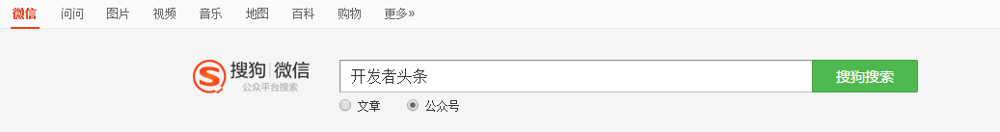
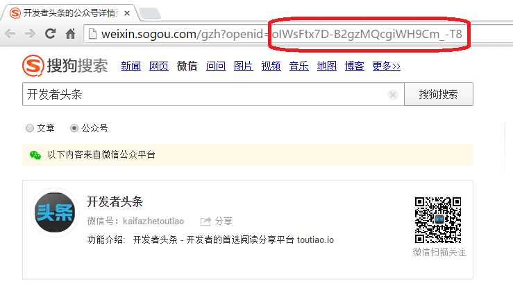
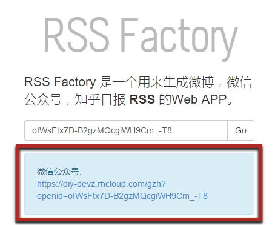

使用 Feedly 等 RSS 工具订阅微信公众号、微博
无意中看到两个工具， RSS Factory 和 WeiRSS 。可以帮助我们使用 RSS 订阅微信公众号，微博账号，知乎日报等，达到统一的阅读体验。
RSS Factory
RSS Factory 是用于生成微博、微信公众号及知乎日报的 RSS 链接的 Web APP。
Author: Timmy Chu
Website: diy-devz.rhcloud.com
Github: zhu327/rss
S1. 查找微信公众号
搜狗提供了微信公众号搜索服务，我们这里要用到它。
打开网站 weixin.sogou.com ，搜索需要订阅的公众号。

S2. 获取 Open ID
搜索结果的网址中，提取 openid= 之后的字段

S3. Feedly 订阅 RSS 链接
使用上一步获得的 Open ID ，在 RSS Factory 中生成订阅链接

最后，使用 Feedly 等 RSS 工具订阅此链接即可。
订阅微博账号同样比较简单， RSS Factory 有现成的教程，有兴趣可以查看。
由于作者开源了 RSS Factory 的源码，我们何以使用自己的服务器搭建该工具，教程及源码参看前文提供的 Github 地址。
WeiRSS
第二个工具是 WeiRSS，只能用于生成微信公众号 RSS 链接。但是其网站上推荐了依一些热门订阅的公众号，还是比较实用的。
Author: Berry && TaoAlpha
Website: weirss.me
Github: iberryful/weixin_sogou